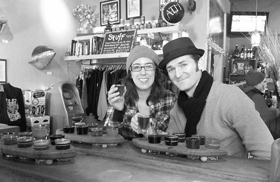
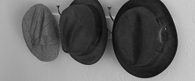

I'm Sean Dickey. I was born with a wild imagination AND an affinity for analysis and organization that borders on obsession. The world of web design and development balances these two aspects of my personality and makes me feel all warm and fuzzy.
Love
I love my amazing wife. And I love beer. Luckily, I just happened to have this photo of my wife drinking beer. Bonus.
Then & Now
I started out as a wee lad in England. I lived in several states as my father was reassigned to different Air Force bases around the country. Eventually, my family settled in Colorado, where I lived for 25 years. I'm currently living in San Jose, CA with my wife, our two mutts—Etta James & Coletrane— and one very big-boned tabby cat named Frances.
I'm a proud memeber of the Dev Bootcamp Red Admirals cohort, where I'm honing my skills to become a world-class beginner in web development and design.

Quirks
I like a lot of things from eras long past. My taste in clothes, music, design, and automobiles are influenced by the 1930s, 40s, and 50s. Some folks think that's pretty quirky.
Contact
Email me: sean.dickey@live.com
© 2012 Sean A. Dickey. All Rights Reserved.